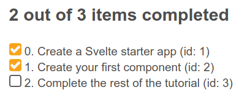

Now that we have our markup and styles ready we can start developing the required features for our Svelte To-Do list app. In this article we'll be using variables and props to make our app dynamic, allowing us to add and delete todos, mark them as complete, and filter them by status.
| Prerequisites: |
At minimum, it is recommended that you are familiar with the core HTML, CSS, and JavaScript languages, and have knowledge of the terminal/command line. You'll need a terminal with node + npm installed to compile and build your app. |
|---|---|
| Objective: | Learn and put into practice some basic Svelte concepts, like creating components, passing data using props, render JavaScript expressions into our markup, modify the components state and iterating over lists. |
Clone the github repo (if you haven't already done it) with:
git clone https://github.com/opensas/mdn-svelte-tutorial.git
Then to get to the current app state, run
cd mdn-svelte-tutorial/03-adding-dynamic-behavior
Or directly download the folder's content:
npx degit opensas/mdn-svelte-tutorial/03-adding-dynamic-behavior
Remember to run npm install && npm run dev to start your app in development mode.
To code along with us using the REPL, start at
https://svelte.dev/repl/c862d964d48d473ca63ab91709a0a5a0?version=3.23.2
Our Todos.svelte component is currently just displaying static markup; let's start making it a bit more dynamic. We'll take the tasks information from the markup and store it in a todos array. We'll also create two variables to keep track of the total number of tasks and the completed tasks.
The state of our component will be represented by these three top-level variables.
Create a <script> section at the top of src/components/Todos.svelte and give it some content, as follows:
<script>
let todos = [
{ id: 1, name: 'Create a Svelte starter app', completed: true },
{ id: 2, name: 'Create your first component', completed: true },
{ id: 3, name: 'Complete the rest of the tutorial', completed: false }
]
let totalTodos = todos.length
let completedTodos = todos.filter(todo => todo.completed).length
</script>
Now let's do something with that information.
Let's start by showing a status message. Find the <h2> heading with an id of list-heading and replace the hardcoded number of active and completed tasks with dynamic expressions:
<h2 id="list-heading">{completedTodos} out of {totalTodos} items completed</h2>
Go to the app, and you should see the "2 out of 3 items completed" message as before, but this time the information is coming from the todos array.
To prove it, go to that array, and try changing some of the todo object's completed property values, and even add a new todo object. Observe how the numbers in the message are updated appropriately.
At the moment, our displayed todo items are all static. We want to iterate over each item in our todos array and render the markup for each task, so let's do that now.
HTML doesn't have a way of expressing logic — like conditionals and loops. Svelte does. In this case we use the {#each...} directive to iterate over the todos array. The second parameter, if provided, will contain the index of the current item. Also, a key expression can be provided, which will uniquely identify each item. Svelte will use it to diff the list when data changes, rather than adding or removing items at the end, and it's a good practice to always specify one. Finally, an :else block can be provided, which will be rendered when the list is empty.
Let's give it a try.
Replace the existing <ul> element with the following simplified version to get an idea of how it works:
<ul>
{#each todos as todo, index (todo.id)}
<li>
<input type="checkbox" checked={todo.completed}/> {index}. {todo.name} (id: {todo.id})
</li>
{:else}
Nothing to do here!
{/each}
</ul>
Go back to the app; you'll see something like this:

Now we've seen that this is working, let's generate a complete todo item with each loop of the {#each} directive, and inside embed the information from the todos array: id, name, and completed. Replace your existing <ul> block with the following:
<!-- Todos -->
<ul role="list" class="todo-list stack-large" aria-labelledby="list-heading">
{#each todos as todo (todo.id)}
<li class="todo">
<div class="stack-small">
<div class="c-cb">
<input type="checkbox" id="todo-{todo.id}" checked={todo.completed}/>
<label for="todo-{todo.id}" class="todo-label">
{todo.name}
</label>
</div>
<div class="btn-group">
<button type="button" class="btn">
Edit <span class="visually-hidden">{todo.name}</span>
</button>
<button type="button" class="btn btn__danger">
Delete <span class="visually-hidden">{todo.name}</span>
</button>
</div>
</div>
</li>
{:else}
<li>Nothing to do here!</li>
{/each}
</ul>
Notice how we are using curly braces to embed JavaScript expressions in HTML attributes, like we did with the checked and id attributes of the checkbox.
We've turned our static markup into a dynamic template ready to display the tasks from our component's state. Great! We are getting there.
With a hardcoded list of todos, our Todos component is not very useful. To turn our component into a general purpose To-Do editor we should allow the parent of this component to pass in the list of todos to edit. This would allow us to save them to a web service or local storage and later retrieve them for update. So let's turn the array into a prop.
In Todos.svelte, replace the existing let todos = ... block with export let todos = [].
export let todos = []
This may feel a little weird at first. That's not how export normally works in JavaScript modules! This is how Svelte 'extends' JavaScript by taking valid syntax and giving it a new purpose. In this case Svelte is using the export keyword to mark a variable declaration as a property or prop, which means it becomes accessible to consumers of the component.
You can also specify a default initial value for a prop. This will be used if the component's consumer doesn't specify the prop on the component — or if its initial value is undefined — when instantiating the component.
So with export let todos = [], we are telling Svelte that our Todos.svelte component will accept a todos attribute, which when omitted will be initialized to an empty array.
Have a look at the app, and you'll see the "Nothing to do here!" message. This is because we are currently not passing any value into it from App.svelte, so it's using the default value.
Now let's move our todos to App.svelte and pass them to the Todos.svelte component as a prop. Update src/App.svelte as follows:
<script>
import Todos from './components/Todos.svelte'
let todos = [
{ id: 1, name: 'Create a Svelte starter app', completed: true },
{ id: 2, name: 'Create your first component', completed: true },
{ id: 3, name: 'Complete the rest of the tutorial', completed: false }
]
</script>
<Todos todos={todos} />
When the attribute and the variable have the same name, Svelte allows you to just specify the variable as a handy shortcut, so we can rewrite our last line like this. Try this now.
<Todos {todos} />
At this point your todos should render just like they did before, except that now we're passing them in from the App.svelte component.
Let's add some functionality to toggle the task status. Svelte has the on:eventname directive for listening to DOM events. Let's add a handler to the on:click event of the checkbox input to toggle the completed value.
Update the <input type="checkbox"> element inside src/components/Todos.svelte as follows:
<input type="checkbox" id="todo-{todo.id}"
on:click={() => todo.completed = !todo.completed}
checked={todo.completed}
/>
Next we'll add a function to remove a todo from our todos array. At the bottom of the Todos.svelte <script> section, add the removeTodo() function like so:
function removeTodo(todo) {
todos = todos.filter(t => t.id !== todo.id)
}
We'll call it via the Delete button. Update it with a click event, like so:
<button type="button" class="btn btn__danger"
on:click={() => removeTodo(todo)}
>
Delete <span class="visually-hidden">{todo.name}</span>
</button>
A very common mistake with handlers in Svelte is to pass the result of executing a function as a handler, instead of passing the function. For example, if you specify on:click={removeTodo(todo)}, it will execute removeTodo(todo) and the result will be passed as a handler, which is not what we had in mind.
In this case you have to specify on:click={() => removeTodo(todo)} as the handler. If removeTodo() received no params, you could use on:event={removeTodo}, but not on:event={removeTodo()}. This is not some special Svelte syntax — here we are just using regular JavaScript arrow functions.
Again, this is good progress — at this point, we can now delete tasks. When a todo item's Delete button is pressed, the relevant todo is removed from the todos array, and the UI updates to no longer show it. In addition, we can now check the checkboxes, and the completed status of the relevant todos will now update in the todos array.
However, the "x out of y items completed" heading is not being updated. Read on to find out why this is happening and how we can solve it.
As we've already seen, every time the value of a component top-level variable is modified Svelte knows how to update the UI. In our app, the todos array value is updated directly every time a todo is toggled or deleted, and so Svelte will update the DOM automatically.
The same is not true for totalTodos and completedTodos, however. In the following code they are assigned a value when the component is instantiated and the script is executed, but after that, their values are not modified:
let totalTodos = todos.length let completedTodos = todos.filter(todo => todo.completed).length
We could recalculate them after toggling and removing todos, but there's an easier way to do it.
We can tell Svelte that we want our totalTodos and completedTodos variables to be reactive by prefixing them with $:. Svelte will generate the code to automatically update them whenever data they depend on is changed.
Note: Svelte uses the $: JavaScript label statement syntax to mark reactive statements. Just like the export keyword being used to declare props, this may look a little alien. This is another example in which Svelte takes advantage of valid JavaScript syntax and gives it a new purpose — in this case to mean "re-run this code whenever any of the referenced values change". Once you get used to it, there's no going back.
Update your totalTodos and completedTodos variable definitions inside src/components/Todos.svelte to look like so:
$: totalTodos = todos.length $: completedTodos = todos.filter(todo => todo.completed).length
If you check your app now, you'll see that the heading's numbers are updated when todos are completed or deleted. Nice!
Behind the scenes the Svelte compiler will parse and analyze our code to make a dependency tree, then it will generate the JavaScript code to re-evaluate each reactive statement whenever one of their dependencies is updated. Reactivity in Svelte is implemented in a very lightweight and performant way, without using listeners, setters, getters, or any other complex mechanism.
Now onto the next major task for this article — let's add some functionality for adding new todos.
First, we'll create a variable to hold the text of the new todo. Add this declaration to the <script> section of Todos.svelte file:
let newTodoName = ''
Now we will use this value in the <input> for adding new tasks. To do that we need to bind our newTodoName variable to the todo-0 input, so that the newTodoName variable value stays in sync with the input's value property. We could do something like this:
<input value={newTodoName} on:keydown={(e) => newTodoName = e.target.value} />
Whenever the value of the variable newTodoName changes, it will be reflected in the value attribute of the input, and whenever a key is pressed in the input, we will update the contents of the variable newTodoName.
This is a manual implementation of two-way data binding for an input box. But we don't need to do this — Svelte provides an easier way to bind any property to a variable, using the bind:property directive:
<input bind:value={newTodoName} />
So, let's implement this. Update the todo-0 input like so:
<input bind:value={newTodoName} type="text" id="todo-0" autocomplete="off" class="input input__lg" />
An easy way to test that this works is to add a reactive statement to log the contents of newTodoName. Add this snippet at the end of the <script> section:
$: console.log('newTodoName: ', newTodoName)
Note: as you may have noticed, reactive statements aren't limited to variable declarations. You can put any JavaScript statement after the $: sign.
Now try going back to localhost:5000, pressing Ctrl + Shift + K to open your browser console and typing something into the input field. You should see your entries logged. At this point, you can delete the reactive console.log() if you wish.
Next up we'll create a function to add the new todo — addTodo() — which will push a new todo object onto the todos array. Add this to the bottom of your <script> block inside src/components/Todos.svelte:
function addTodo() {
todos.push({ id: 999, name: newTodoName, completed: false })
newTodoName = ''
}
Note: For the moment we are just assigning the same id to every todo, but don't worry, we will fix that soon.
Now we want to update our HTML so that we call addTodo() whenever the form is submitted. Update the NewTodo form's opening tag like so:
<form on:submit|preventDefault={addTodo}>
The on:eventname directive supports adding modifiers to the DOM event with the | character. In this case, the preventDefault modifier tells Svelte to generate the code to call event.preventDefault() before running the handler. Explore the previous link to see what other modifiers are available.
If you try adding new todos at this point, the new todos are added to the todos array but our UI is not updated. Remember that in Svelte reactivity is triggered with assignments. That means that the addTodo() function is executed, the element is added to the todos array, but Svelte won't detect that the push method modified the array, so it won't refresh the tasks <ul>.
Just adding todos = todos to the end of the addTodo() function would solve the problem, but it seems strange to have to include that at the end of the function. Instead, we'll take out the push() method and use spread syntax to achieve the same result — we'll assign a value to the todos array equal to the todos array plus the new object.
Note: Array has several mutable operations — push(), pop(), splice(), shift(), unshift(), reverse(), and sort(). Using them often causes side effects and bugs that are hard to track. By using the spread syntax instead of push() we avoid mutating the array, which is considered a good practice.
Update your addTodo() function like so:
function addTodo() {
todos = [...todos, { id: 999, name: newTodoName, completed: false }]
newTodoName = ''
}
If you try to add new todos in your app now, you'll be able to add a new todo and have it appear in the UI! Once. If you try it a second time, it won't work, and you'll get a console message saying "Error: Cannot have duplicate keys in a keyed each". We need unique IDs for our todos!
Let's declare a newTodoId variable calculated from the number of todos plus 1, and make it reactive. Add the following snippet to the <script> section:
let newTodoId
$: {
if (totalTodos === 0) {
newTodoId = 1;
} else {
newTodoId = Math.max(...todos.map(t => t.id)) + 1;
}
}
Note: as you can see, reactive statements are not limited to one-liners. The following would work too, but it is a little less readable: $: newTodoId = totalTodos ? Math.max(...todos.map(t => t.id)) + 1 : 1
How does Svelte achieve this? The compiler parses the whole reactive statement, and detects that it depends on the totalTodos variable and the todos array. So whenever either of them is modified, this code is re-evaluated, updating newTodoId accordingly.
Let's use this in our addTodo() function — update it like so:
function addTodo() {
todos = [...todos, { id: newTodoId, name: newTodoName, completed: false }]
newTodoName = ''
}
Finally for this article, let's implement the ability to filter our todos by status. We'll create a variable to hold the current filter, and a helper function that will return the filtered todos.
At the bottom of our <script> section add the following:
let filter = 'all'
const filterTodos = (filter, todos) =>
filter === 'active' ? todos.filter(t => !t.completed) :
filter === 'completed' ? todos.filter(t => t.completed) :
todos
We use the filter variable to control the active filter: all, active, or completed. Just assigning one of these values to the filter variable will activate the filter and update the list of todos. Let's see how to achieve this.
The filterTodos() function will receive the current filter and the list of todos, and return a new array of todos filtered accordingly.
Let's update the filter button markup to make it dynamic and update the current filter when the user presses one of the filter buttons. Update it like this:
<div class="filters btn-group stack-exception">
<button class="btn toggle-btn" class:btn__primary={filter === 'all'} aria-pressed={filter === 'all'} on:click={()=> filter = 'all'} >
<span class="visually-hidden">Show</span>
<span>All</span>
<span class="visually-hidden">tasks</span>
</button>
<button class="btn toggle-btn" class:btn__primary={filter === 'active'} aria-pressed={filter === 'active'} on:click={()=> filter = 'active'} >
<span class="visually-hidden">Show</span>
<span>Active</span>
<span class="visually-hidden">tasks</span>
</button>
<button class="btn toggle-btn" class:btn__primary={filter === 'completed'} aria-pressed={filter === 'completed'} on:click={()=> filter = 'completed'} >
<span class="visually-hidden">Show</span>
<span>Completed</span>
<span class="visually-hidden">tasks</span>
</button>
</div>
There are a couple of things going on in this markup.
We will show the current filter by applying the btn__primary class to the active filter button. To conditionally apply style classes to an element we use the class:name={value} directive. If the value expression evaluates to truthy, the class name will be applied. You can add many of these directives, with different conditions, to the same element. So when we issue class:btn__primary={filter === 'all'}, Svelte will apply the btn__primary class if filter equals all.
Note: Svelte provides a shortcut which allows us to shorten <div class:active={active}> to <div class:active> when the class matches the variable name.
Something similar happens with aria-pressed={filter === 'all'} — when the JavaScript expression passed between curly braces evaluates to a truthy value, the aria-pressed attribute will be added to the button.
Whenever we click on a button we update the filter variable by issuing on:click={()=> filter = 'all'}. Read on to find out how Svelte reactivity will take care of the rest.
Now we just need to use the helper function in the {#each} loop; update it like this:
...
<ul role="list" class="todo-list stack-large" aria-labelledby="list-heading">
{#each filterTodos(filter, todos) as todo (todo.id)}
...
After analyzing our code, Svelte detects that our filterTodos() function depends on the variables filter and todos. And, just like with any other dynamic expression embedded in the markup, whenever any of these dependencies change the DOM will be updated accordingly. So whenever filter or todos changes, the filterTodos() function will be re-evaluated and the items inside the loop will be updated.
Tip: reactivity can be tricky sometimes. Svelte recognizes filter as a dependency because we are referencing it in the filterTodos(filter, todo) expression. filter is a top-level variable, so we might be tempted to remove it from the helper function params, and just call it like this — filterTodos(todo). This would work, but now Svelte has no way to find out that {#each filterTodos(todos)... } depends on filter, and the list of filtered todos won't be updated when the filter changes. Always remember that Svelte analyzes our code to find out dependencies, so it's better to be explicit about it and not rely on the visibility of top-level variables. Besides, it's a good practice to make our code clear and explicit about what information it is using.
To see the state of the code as it should be at the end of this article, access your copy of our repo like this:
cd mdn-svelte-tutorial/04-componentizing-our-app
Or directly download the folder's content:
npx degit opensas/mdn-svelte-tutorial/04-componentizing-our-app
Remember to run npm install && npm run dev to start your app in development mode.
To see the current state of the code in a REPL, visit:
https://svelte.dev/repl/99b9eb228b404a2f8c8959b22c0a40d3?version=3.23.2
That will do for now! In this article we already implemented most of our desired functionality. Our app can display, add, and delete todos, toggle their completed status, show how many of them are completed and apply filters.
To recap, we covered the following topics:
{#each} directive.console.log() and reactive statements.bind:property directive.In the next article we will add further functionality, which will allow users to edit todos.
{{PreviousMenuNext("Learn/Tools_and_testing/Client-side_JavaScript_frameworks/Svelte_Todo_list_beginning","Learn/Tools_and_testing/Client-side_JavaScript_frameworks/Svelte_components", "Learn/Tools_and_testing/Client-side_JavaScript_frameworks")}}